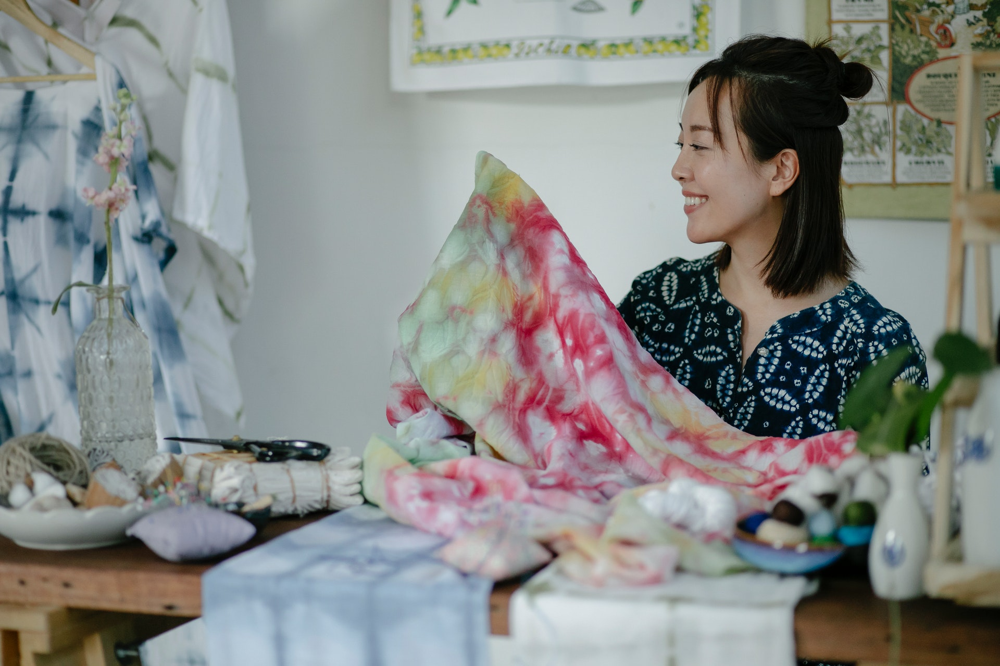
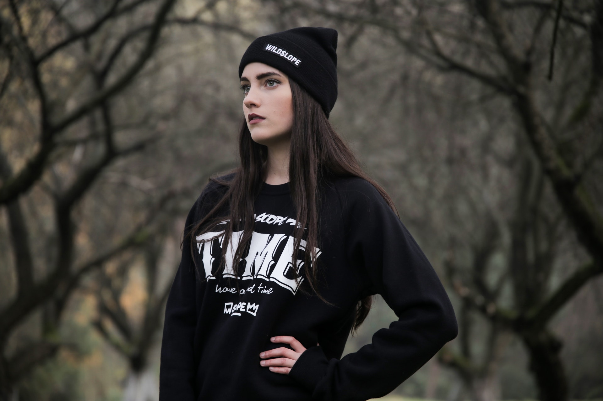

2022 流行穿搭趨勢
01. 織物印花
Source : Photo by Teona Swift / pexels.com
大膽、明亮、自信的織物印花，依舊是2022年春季穿搭的首選搭配，不論是花卉圖案的高雅、動物圖案的狂野，或是紮染印花的隨興與自然，都是非常適合您率性又出眾的穿搭單品。
02. 生活極簡風
Source : Photo by Dorina Stati / pexels.com
簡約又不失氣質的極簡風穿搭一直是許多人的首選，沒有誇張的圖樣，只用單純的素色與配件就能穿出層次與個性，是適合喜愛舒適與生活感的您。
03. 休閒西裝
Source : Photo by Mikhail Nilov / pexels.com
休閒西裝風是歐美一種流行穿搭風格，能正式也能休閒，很受現代男性喜愛，能夠穿著既體面又不嚴肅，不論是與朋友聚餐或是討論公事都合適，適合任何場所。
04. 街頭潮流
Source : Photo by Pixabay / pexels.com
街頭潮流是許多年輕人展現活力與創意的穿搭風格，並不侷限設計師與流行文化，而是以方便活動的休閒服飾與好搭配的單品為主，像是穿著鮮豔的T恤、寬褲等。
05. 大膽亮色系
Source : Photo by Juan mendez / pexels.com
以大膽亮色系運用為主軸的穿搭，有更鮮明的對比與充滿陽光的活力感，能夠穿出個人風格與率性，適合春夏季節。